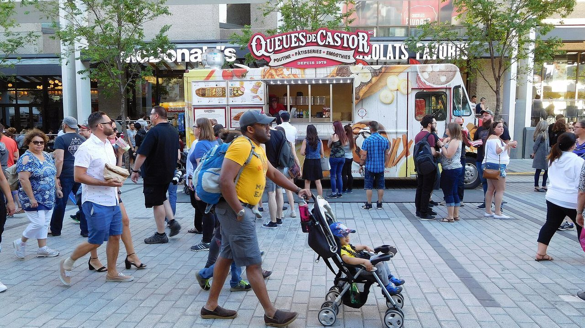

Race, Montreal Jazz Fest

Behind
Best +0:01
371W
Target 418 W-47 W
- Cadence
- 87rpm
- Heart
- 140bpm
- Speed
- 26.5km/h
Work19 of 26
0:22
Next: · 0:15 at level 10
+0.2%
11 m climbed
6.77 km
22
Resistance / 32
Solo races your best-time ghost: position reads Ahead or Behind, and solo alone gets a Pause button. Frozen at 15:23.